迷わないように、機器ごとに分けました
使っているCGMを選んでください
選んだあとは、その機器に必要なSTEPだけを上から順番に進めます。
Glurooでつなぐ機器
どちらのガイドも、最初にGlucoScopeをiPhoneのホーム画面へ追加します。接続後にサイトが分からなくなるのを防ぐためです。
Guardian（MiniMed 780G）を使っている方
Guardianは、Guardian MonitorからGluroo Global ConnectへNightscout同期する専用ガイドを使います。
Guardian Monitorの専用ガイドを開く表示された順に、そのまま進めます
Glurooを準備する方法
使っている機器に必要な画面だけを、上から順番に案内します。
アプリ更新で文言や順番が少し変わることがあります。治療に関する数値は、このガイドを見て入力・変更しません。
すでにGlurooを使っている方
Glurooにログイン済みなら、最初の設定は繰り返さなくて大丈夫です。
設定メニューを開くSTEPから始める最初に
GlucoScopeをホーム画面へ追加します
STEP 2
Safariで開いて、ホーム画面へ追加します
「Safariで開く」が表示されたら、先にそれを押します。Safariでもう一度共有メニューを開き、「ホーム画面に追加」→右上の「追加」を押します。
「ブックマークに追加」ではありません。必ず「ホーム画面に追加」を選びます。
すでに同じGlucoScopeアイコンがある場合は、追加し直さず次へ進めます。初回のデータ接続は、最後にこのアイコンを開いて行います。
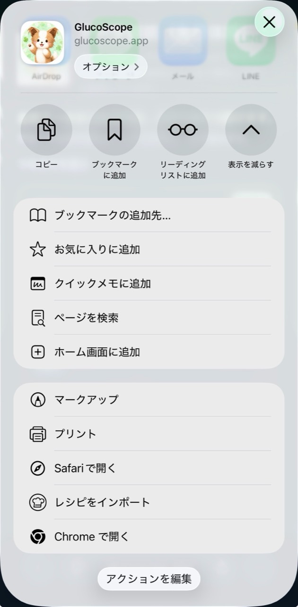
第1章
App StoreからGlurooを入れます
34画面中 1
App StoreでGlurooを探します
iPhoneでApp Storeを開き、右下の「検索」を押します。検索欄が見えたら次へ進みます。
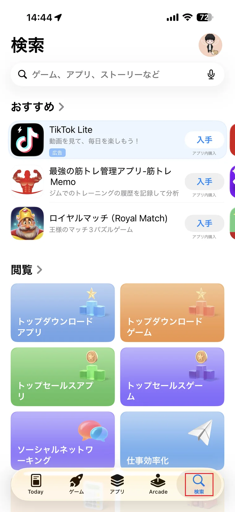
34画面中 2
「gluroo」と検索します
検索欄へ「gluroo」と入力します。カンガルーの絵がある「Gluroo Diabetes Logger」を押します。
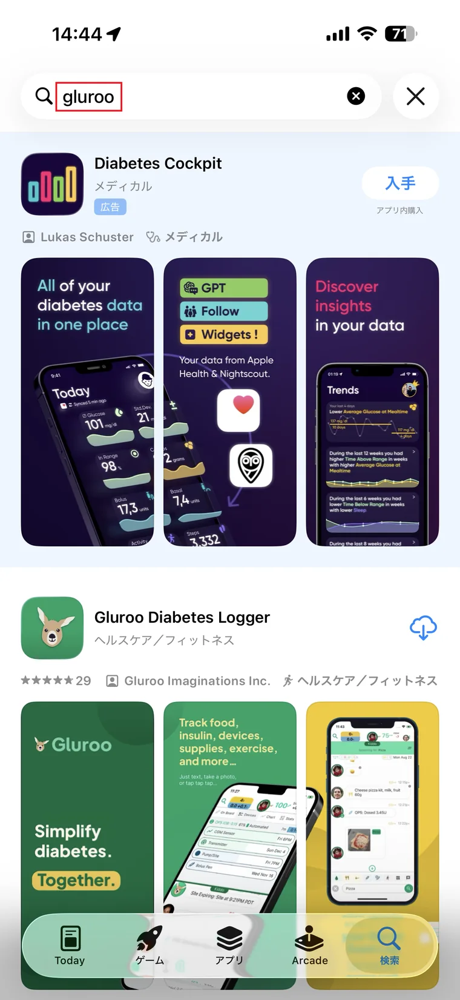
34画面中 3
正しいGlurooを入れます
アプリ名が「Gluroo Diabetes Logger」、開発元が「Gluroo Imaginations Inc.」であることを確認し、雲の印・「入手」・「開く」のいずれかを押します。
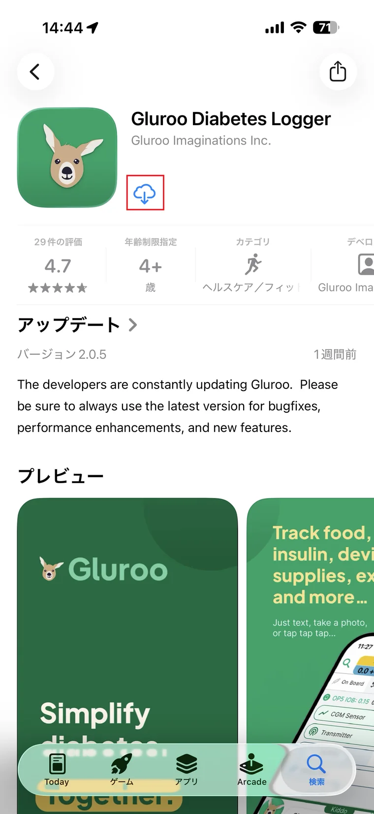
第2章
Glurooの初回設定を、表示順に進めます
34画面中 4
「始めましょう」を押します
初めて設定する場合は緑の「始めましょう」を押します。「I already have an account」は、以前作ったGlurooアカウントへ戻る方の入口です。
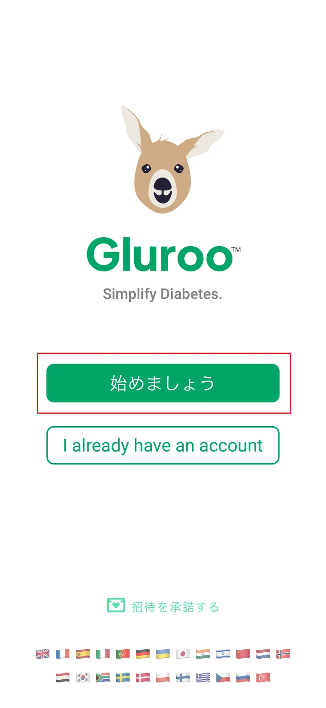
34画面中 5
誰のために使うか選びます
自分のデータを見る場合は「自分」を選びます。家族などを支えるために設定する場合は、実際の関係に合う項目を選び、「継続する」を押します。
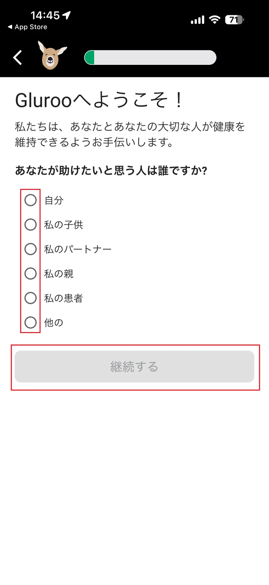
34画面中 6
プロフィールの必須項目を入力します
分からない内容は、分かる範囲で入力して「継続する」を押します。
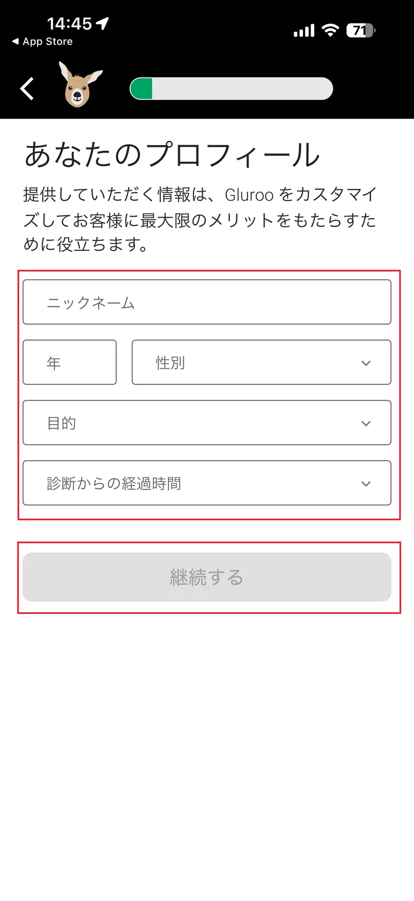
34画面中 7
利用目的を1つ以上選びます
当てはまる目的を1つ以上選びます。GlucoScopeへつなぐ準備では「データをすべて1か所で確認する」が近い選択肢です。選んだら「継続する」を押します。
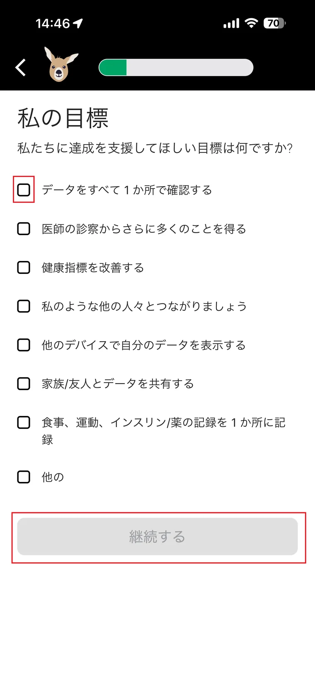
34画面中 8
連携サービスの案内を進みます
中央の別サービスを試す必要はありません。下の緑色の「Glurooの設定を続ける」を押します。
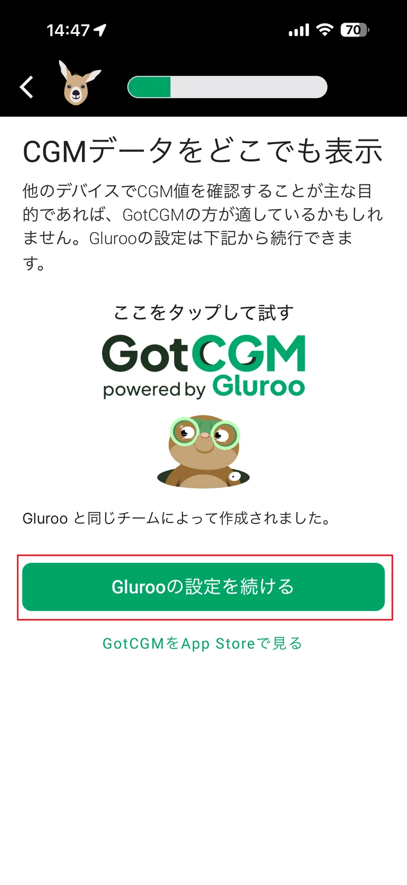
34画面中 9
通知の案内を進みます
この画面では「通知をオンにする」を押すと、次にiPhoneの確認画面が出ます。通知設定はあとからiPhoneの設定で変更できます。
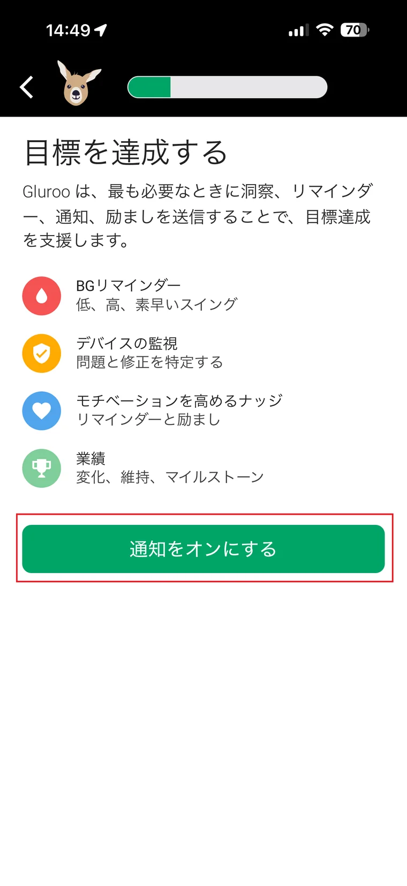
34画面中 10
iPhoneの通知許可を選びます
通知を受け取る場合は「許可」を押します。受け取らない場合は「許可しない」でも初期設定は続けられます。どちらを選んでも、あとでiPhoneの設定から変更できます。
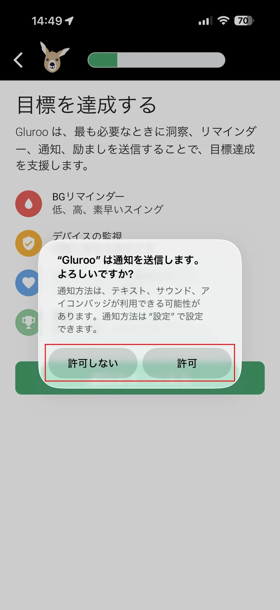
34画面中 11
「Dexcom G7」を選びますLibreの項目を選びます
一覧から「Dexcom G7」を選びます。この画面では機器の種類を選ぶだけです。Dexcom Shareとの接続は、初回設定が終わってから1回だけ行います。
「アボット フリースタイル リブレのバリエーション」の項目を選びます。この画面では機器の種類を選ぶだけです。LibreLinkUpとの接続は、初回設定が終わってから1回だけ行います。
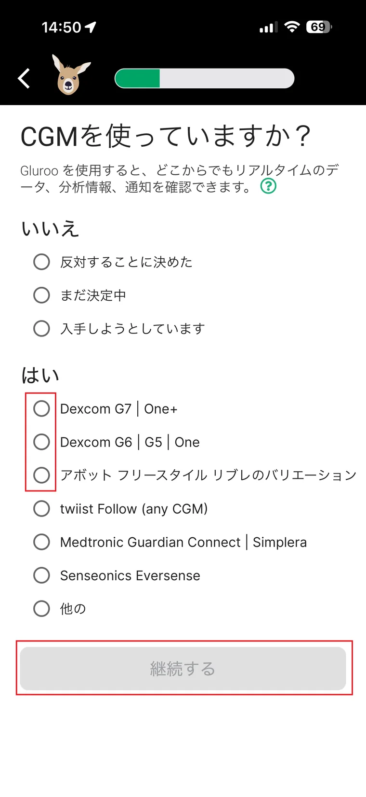
34画面中 12
ポンプ・スマートペンの質問を確認します
ポンプやスマートペンを使っていない場合は、上部の「いいえ」から現在の状況に近い項目を選びます。使用中の場合は下へスクロールして機器名を探します。
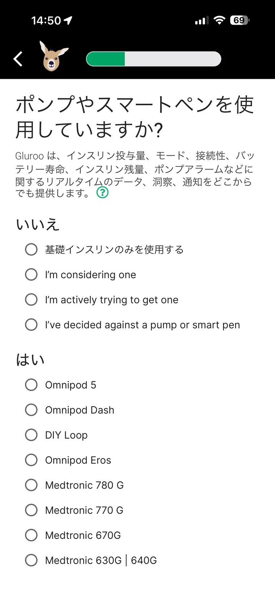
34画面中 13
使っている機器があれば選びます
使用中の機器が一覧にあれば、その機器だけを選びます。使っていない場合は機器名を選ばず、前の画面にある「いいえ」の選択肢を使います。インスリンペンを利用している方は「InPen」を選択してください。
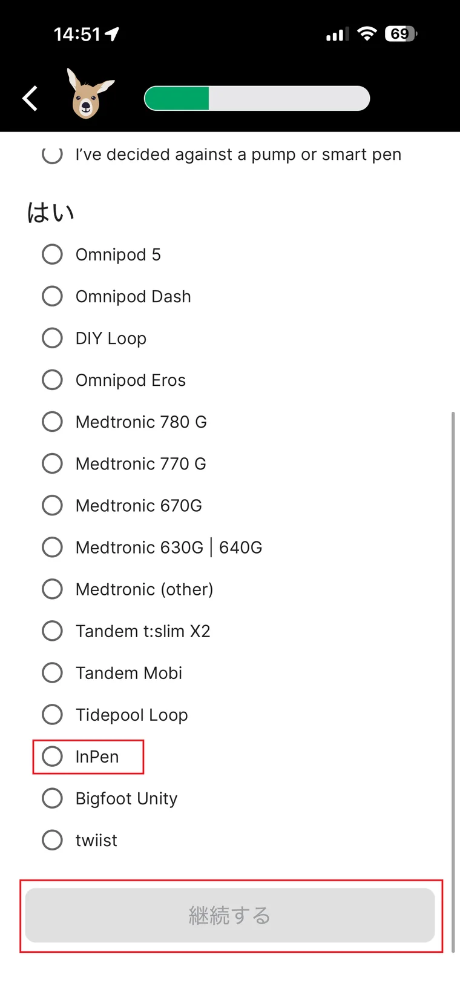
34画面中 14
インスリン設定は「Set up later」で進みます
炭水化物比率やISFなどの治療に関わる値は、GlucoScopeとの接続には必要ありません。下の「Set up later」を押します。
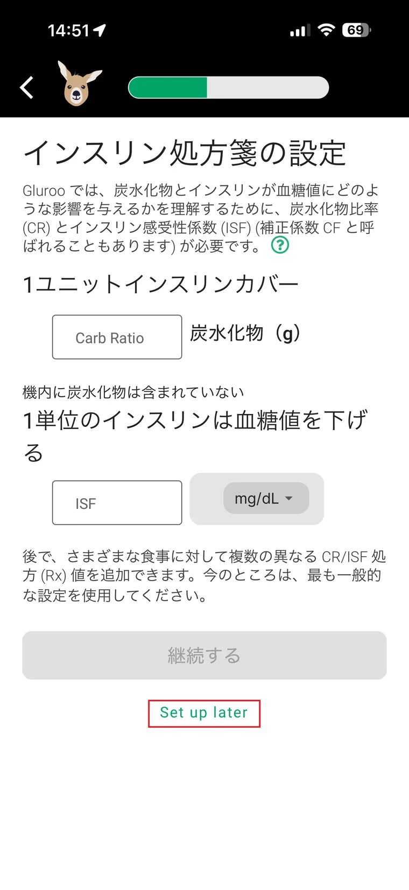
34画面中 15
基礎インスリンのリマインダーをスキップします
GlucoScopeとの接続には必要ありません。「基礎リマインダーをスキップ」を押します。治療内容は変更しません。
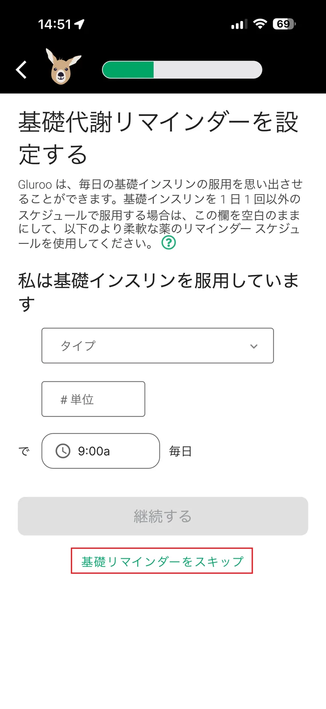
34画面中 16
服薬リマインダーをスキップします
GlucoScopeとの接続には必要ありません。「スキップして後でやる」を押します。
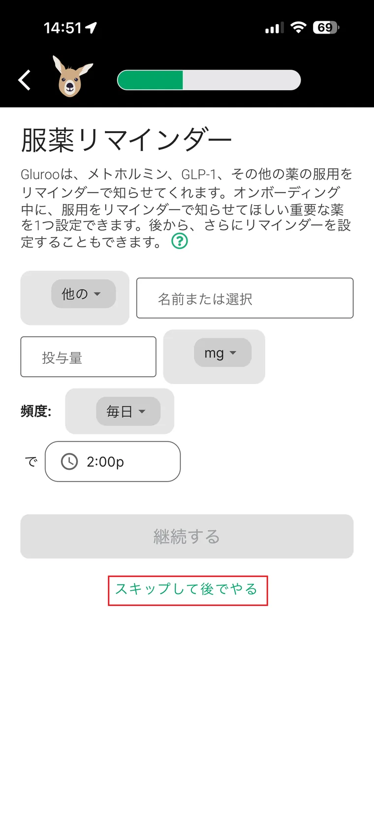
34画面中 17
AppleまたはGoogleでログインします
次回も使えるログイン方法を選びます。AppleまたはGoogleのどちらでも構いません。
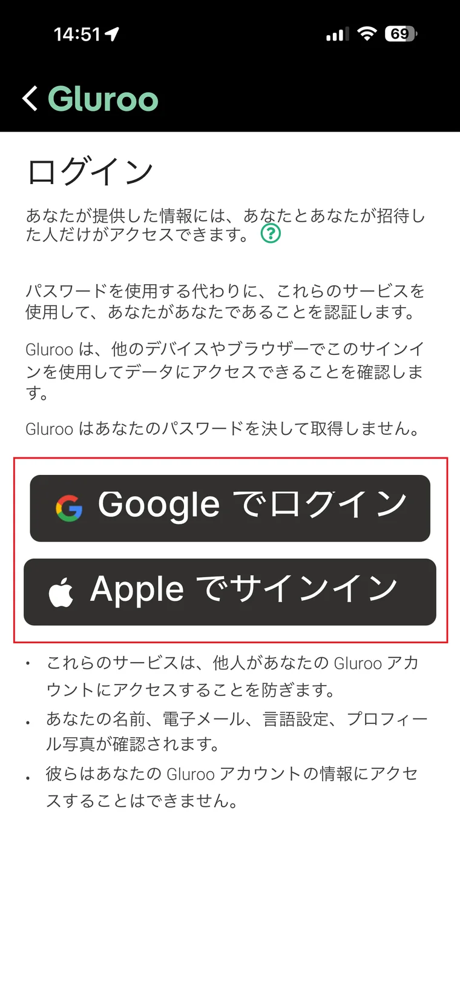
34画面中 18
「継続する」を押します
「アクセス確認済みです！」と表示されたら、緑の「継続する」を押します。
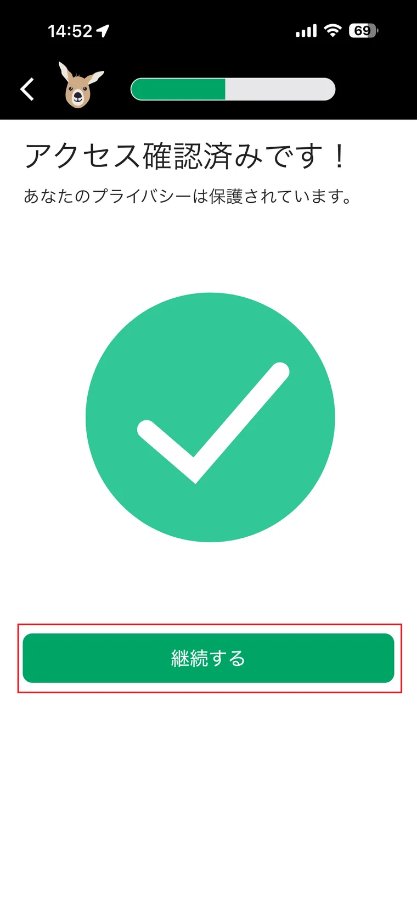
34画面中 19
利用規約などを読みます
利用規約、プライバシーポリシー、医学的警告、健康データ処理の各項目を読みます。内容に同意できない場合はチェックせず、ここで設定を止めます。
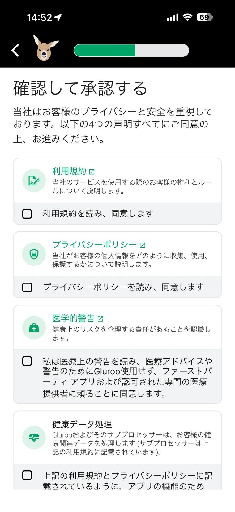
34画面中 20
同意できる項目にチェックして続けます
内容を確認して同意できる場合だけ各チェック欄をオンにし、「同意して続行」を押します。
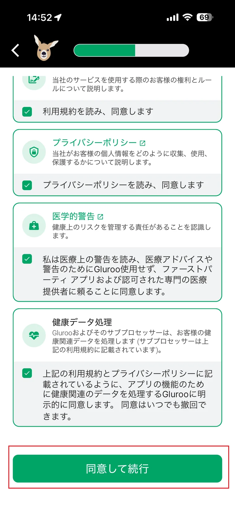
34画面中 21
表示用のニックネームを確認します
必要に応じてプロフィール写真とニックネームを設定し、「継続する」を押します。
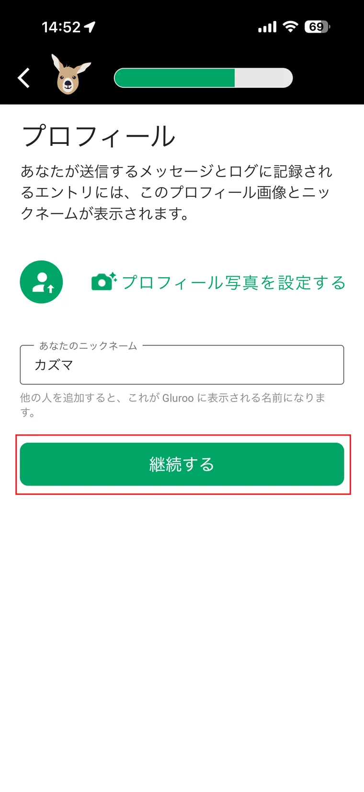
第3章
CGM接続は後にして、初回設定を終えます
34画面中 22
「これは後で行います」を押します
ここではCGMのメールアドレスやパスワードを入力しません。必ず「これは後で行います」を押して、初回設定を先へ進めます。CGMとの接続は、設定画面からあとで1回だけ行います。
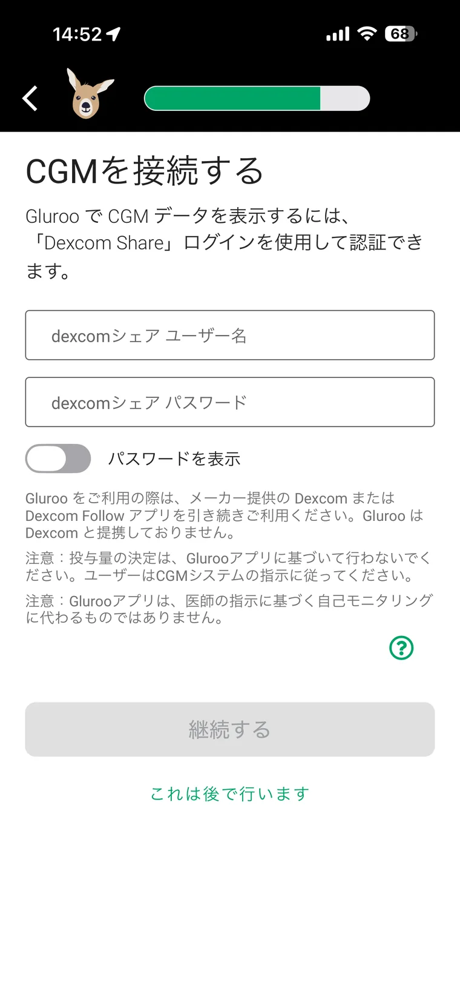
34画面中 23
Apple Healthは「今はスキップ」で進みます
GlucoScopeとの接続には必要ありません。「今はスキップ」を押します。あとからGlurooの設定で変更できます。
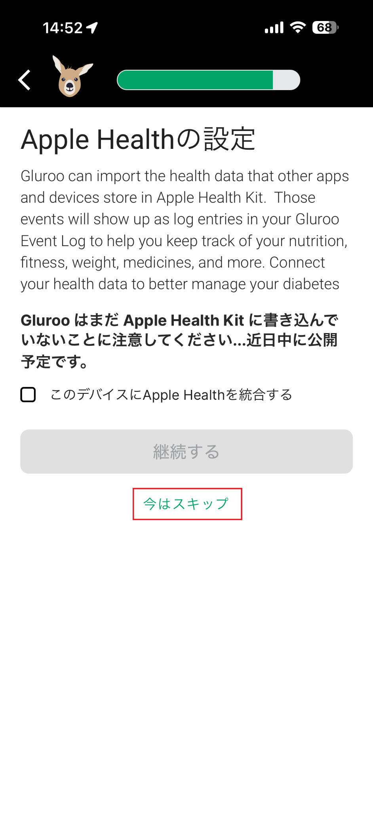
34画面中 24
「準備完了！」で継続します
初回案内の最後です。緑の「継続する」を押してGlurooのホーム画面へ進みます。
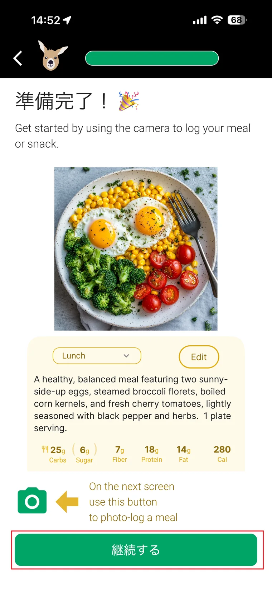
34画面中 25
更新のお知らせを閉じます
「Glurooが新しくなりました！」と表示されたら「わかりました」を押します。この案内はアプリ更新後だけ表示されることがあります。
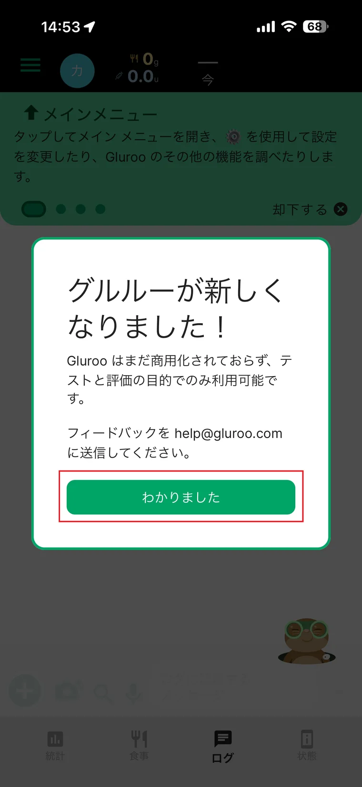
第4章
設定からGlobal Connectを開きます
34画面中 26
左上のメニューから「設定」を押します
左上の三本線を押してこのメニューを開き、歯車の印がある「設定」を押します。
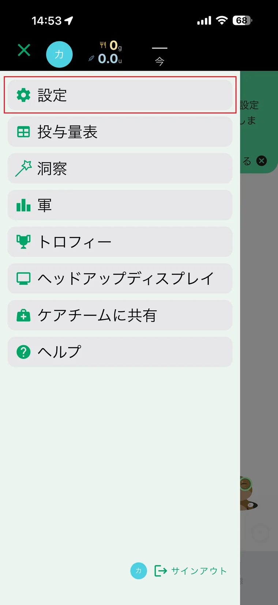
34画面中 27
設定画面の「CGM」を開きます
CGMの接続がまだの場合は「CGM」を押します。すでにGlurooへ血糖値が表示されている場合は、設定画面を下へスクロールして「グルローグローバルコネクト」のSTEPへ進めます。
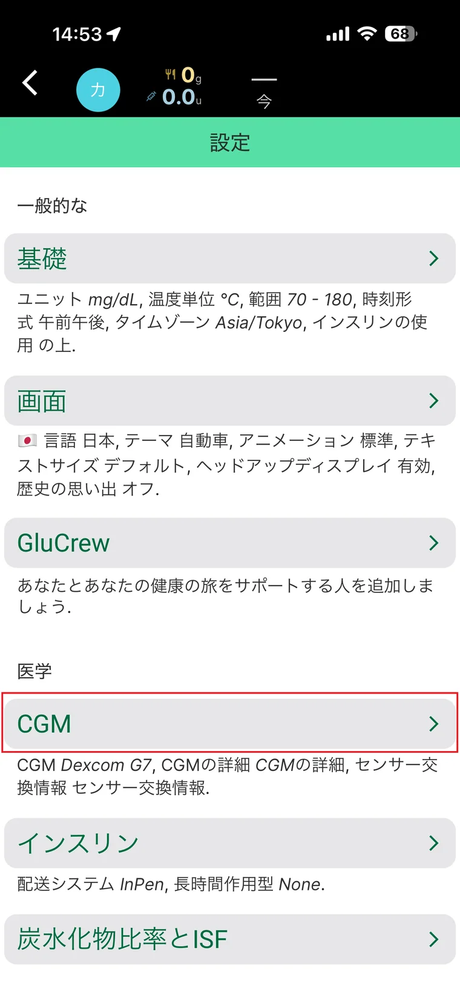
34画面中 28
Dexcom Shareを接続します
Dexcom Shareのユーザー名とパスワードをGlurooへ入力します。GlucoScopeへDexcomのパスワードを入力することはありません。Shareの準備がまだなら、下のガイドを上から順番に進めます。
Dexcom G7の準備ガイドを開く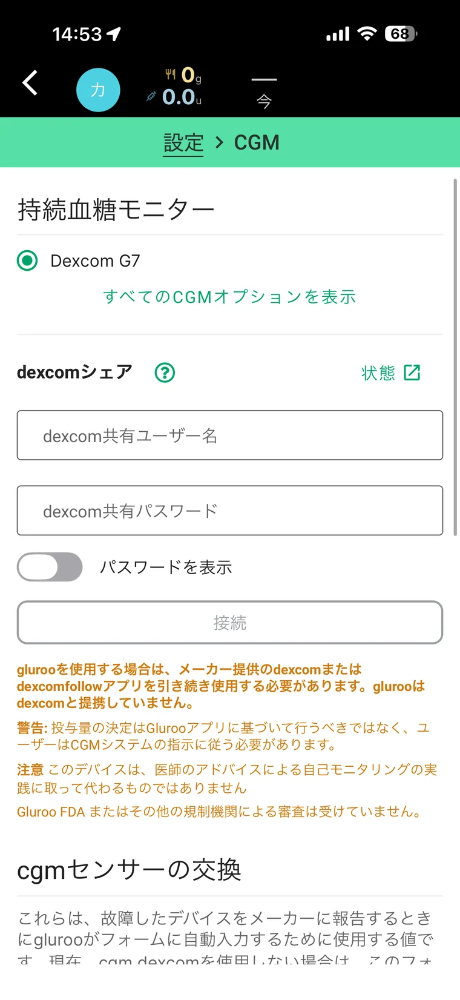
34画面中 29
LibreLinkUpを接続します
「Freestyle Libre 2 経由 Link-Up」を選び、LibreLinkUpへ登録したメールアドレスとパスワードをGlurooへ入力します。GlucoScopeへLibreLinkUpのパスワードを入力することはありません。共有準備がまだなら、下のガイドを上から順番に進めます。
LibreLinkUpの準備ガイドを開く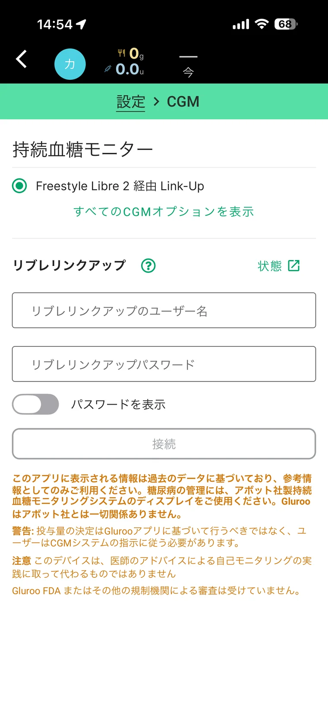
34画面中 30
「グルローグローバルコネクト」を押します
設定画面を下へスクロールし、「グルローグローバルコネクト ナイトスカウト」を押します。
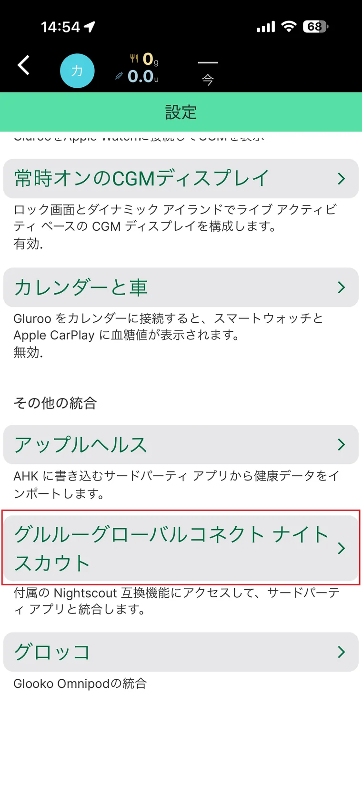
34画面中 31
上部の「コピー」を押します
上部の「コピー」を押すと、コピー形式の一覧が表示されます。次のSTEPへ進みます。
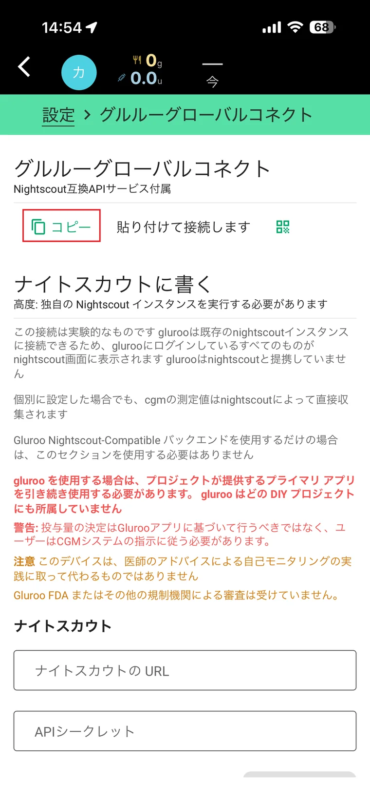
34画面中 32
この一覧が出たら閉じて戻ります
コピー形式の一覧が表示されたら、GlucoScopeではこの一覧を使わないため、背景の黒い部分をタップして元の画面へ戻ります。
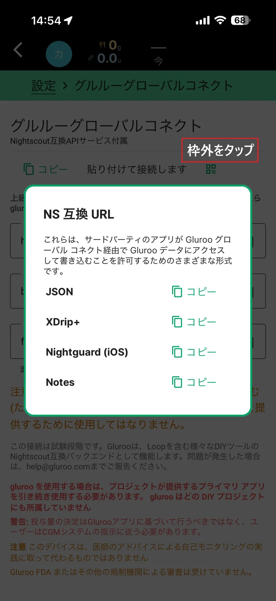
第5章
GlucoScopeへ貼る2つの情報をコピーします
34画面中 33
Nightscout URLとAPI Secret Tokenをコピーします
各欄の右端にある重なった四角を押します。Nightscout URLはGlucoScopeの「接続先URL」へ、API Secret Tokenは「接続用の合言葉」へ貼ります。API Secret Header (SHA1)は使いません。
スクリーンショット、LINE、メール、SNSへ載せず、ご自身のGlucoScopeへ直接貼り付けてください。
公開用画像では、秘密の接続情報を隠しています。
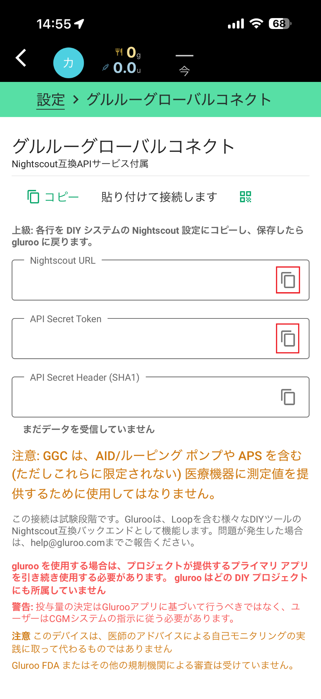
34画面中 34
ホーム画面のアイコンからGlucoScopeを開きます
🍀 GlucoScopeの接続画面へ戻る- iPhoneのホーム画面へ戻り、最初に追加したGlucoScopeのアイコンを押します。アイコンが見つからないときは、上の大きなリンクから開けます。
- 「データ接続（先行体験）」を押し、「Glurooでつなぐ」→「Glurooの準備ができたので、接続へ進む」の順に押します。
- 表示名を入力し、Nightscout URLを「接続先URL」へ、API Secret Tokenを「接続用の合言葉」へ貼ります。
- 「接続してGlucoScopeを始める」を1回押します。「接続を確認しているよ…」の間は、そのまま少し待ちます。
- 接続できると画面が自動で閉じ、「ようこそ、GlucoScopeへ 🍀」「接続できました。最新の血糖データを表示しています。」と短く表示されます。そのあと現在の血糖値画面が見えたら成功です。
URLや合言葉は、LINE・メール・SNSでほかの人へ送りません。エラーが出た場合は、Glurooから2つの情報をもう一度コピーして、同じボタンからやり直せます。
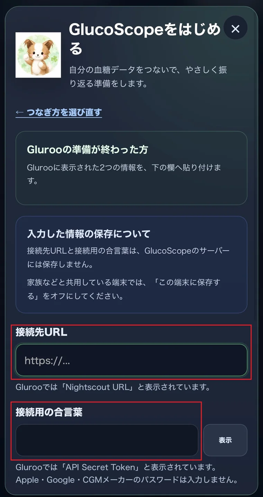